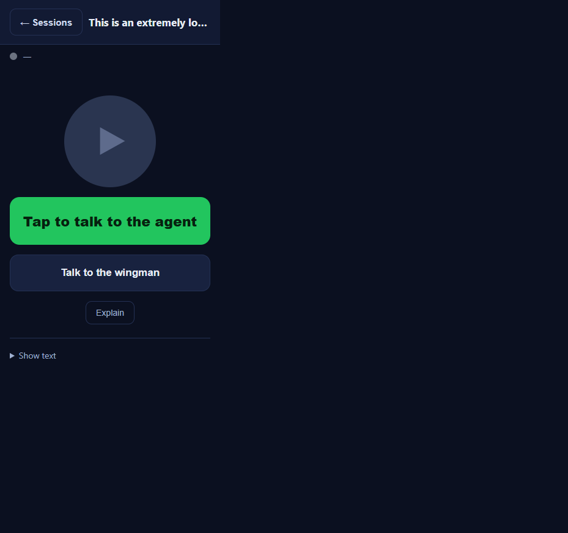

Issue: [Voice] /m/ session: enlarge the Sessions back button (bigger tap target)
Pull request: #543 (branch issue-536-enlarge-back-button)
Verifier: QA Agent (independent, isolated git worktree)
Prior result: FAIL - cache-bust version was v18, equal to origin/main (not strictly ahead). Developer bumped to v19.
VERIFIED - all acceptance criteria met. RECOMMEND MERGE.
Verified independently in an isolated worktree off the PR branch with origin/main merged in
(already up to date - clean, no conflicts). The exact byte-identical wwwroot/m/ static assets the
Cockpit serves were served over a local static server and driven in a real Chromium browser
(cc-playwright) at a 360 CSS-pixel phone width. Geometry measured via getBoundingClientRect()
and computed style.
| # | Criterion | Expected | Actual | Result |
|---|---|---|---|---|
| 1 | Back button visibly larger, tap target >= 44 x 44 CSS px | >= 44 x 44 CSS px | Measured 119 x 44 CSS px at 360px width; computed min-height:44px; min-width:44px; font-size:15px (was 95 x 33 / 13px) |
PASS |
| 2 | Tapping returns to the session list - behavior unchanged | list-view visible, session-view hidden | Clicked #back-btn: session-view hidden=true, list-view visible=true (showList() unchanged in m.js) |
PASS |
| 3 | Complies with VisualStyle.md (colors, radius, spacing) | Consistent with other ghost controls | Keeps .ghost color identity (class="ghost back-btn"); border-radius:10px; only the back button enlarged - Refresh ghost button untouched |
PASS |
| 4 | Header bar does not break/overflow at 360px; sv-name ellipsizes; one row | No overflow; ellipsis; single row | At 360px: bar width 360, no overflow (scrollW=clientW=360); sv-name scrollWidth 1171 > clientWidth 199 = ellipsized; flex-wrap:nowrap, single row | PASS |
| 5 | Cache-bust version incremented (strictly ahead of main) | > v18 (main) | v19 on all three spots (m.css?v=19, m.js?v=19, on-screen .ver = v19), strictly greater than origin/main's v18. Confirmed on the freshly served page. |
PASS |
The prior QA fail was: cache-bust v18 == origin/main v18 (not strictly ahead). Now fixed:
origin/main = v18, PR branch = v19 on all three cache-bust locations (CSS query, JS query, on-screen
label). Strictly ahead. The new .back-btn CSS will be fetched, not masked by a cached v18 bundle.
index.html (back-btn class + 3x v18->v19) and
m.css (new .back-btn rule). m.js is NOT touched.loadSessions(true) path) - unaffected (m.js untouched).dotnet build cc-director.sln -> Build succeeded, 0 Warning(s),
0 Error(s) (NU1903 fixed).
The "← Sessions" back button is a comfortable bordered tap target (119 x 44); the long session name ellipsizes to "This is an extremely lo..." on one row with no overflow. The back button is clearly larger than the small Explain ghost button below, confirming the enlargement is scoped to the back button.